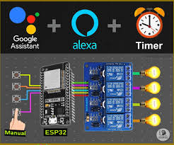
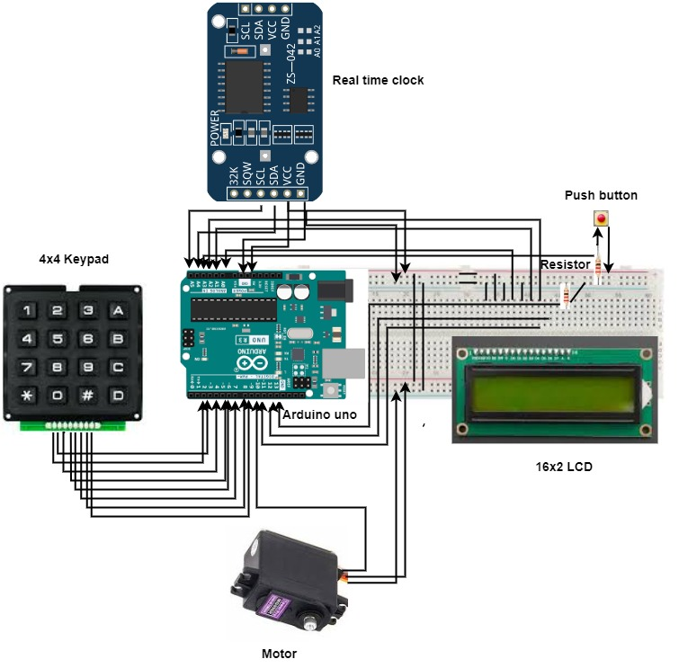
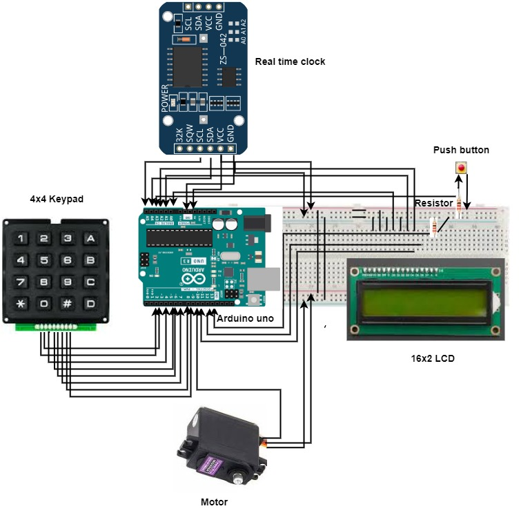
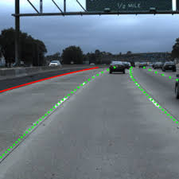
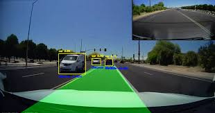
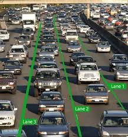

Hi, I'm Venkata Kanaka Sai Harika Maddali
ECE Student | Aspiring VLSI Engineer|Communications
ECE Student | Aspiring VLSI Engineer|Communications
I am undergraduate student from Electronics & Communication Engineering . I am passionate about builiding my carrer in vlsi field,especially in areas like physical design,DFT,FPGA/ASIC and Communication field. And I have done the project in diploma “Home Autmation Using Alexa” helped me explore Embedded system and Real-time applications and I have done the project on “Road lane line detection system”.I’m looking forward to opportunities where I can apply my knowledge .
B.Tech in Electronics and Communication Engineering
Andhra Loyola Institute of Engineering and Technology
Expected Graduation: 2026
Diploma in Electronics and Communication Engineering
K E S Polytechnic For Women
2020-2023
School Of Secondary Education
Oxford Creativity E M High School
2019-2020
Designed and implemented a home automation system using voice commands through Alexa. Integrated smart devices to control lights and appliances remotely. Applied basic IoT concepts and sensor interfacing for real-time device management.
An automatic pet feeder system that feeds pets at specific times without human intervention, controlled by an Arduino microcontroller. It ensures pets are fed regularly and accurately.
 

A computer vision system for autonomous vehicles that detects lane markings and helps maintain lane discipline. Implemented using Python-based image processing techniques.
  Phone no:9490494599
Email: mvksharika2005@mail.com
LinkedIn: www.linkedin.com/in/venkata-kanaka-sai-harika-maddali-134a29316